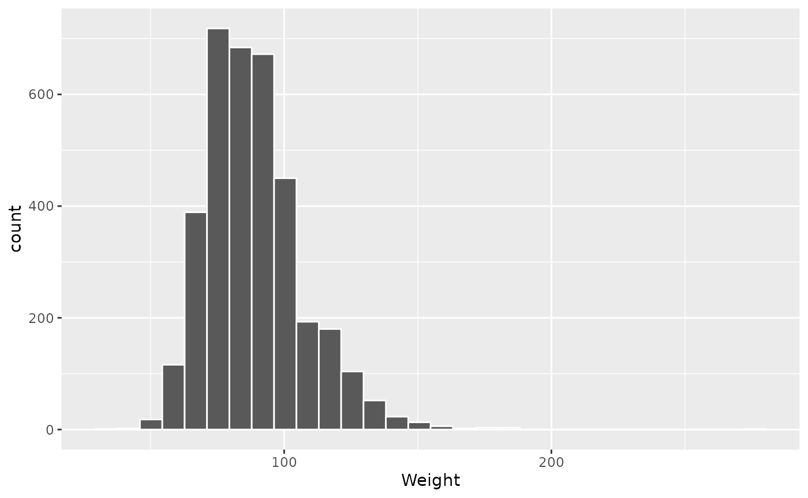
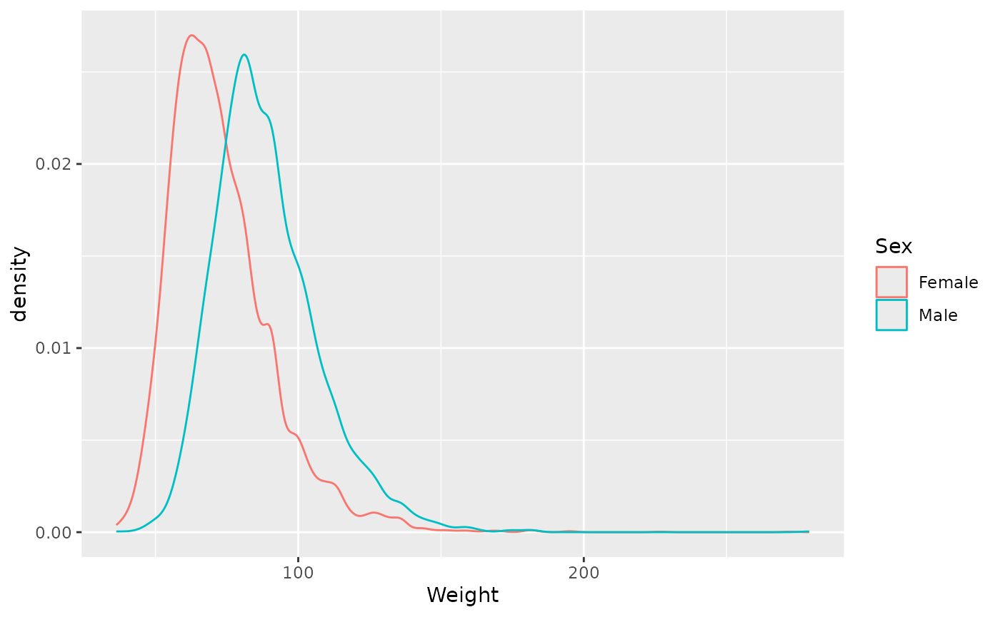
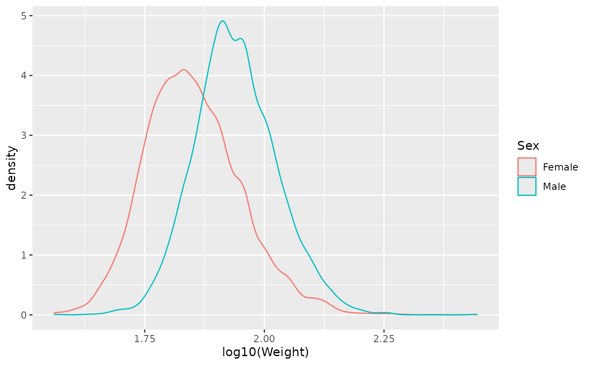
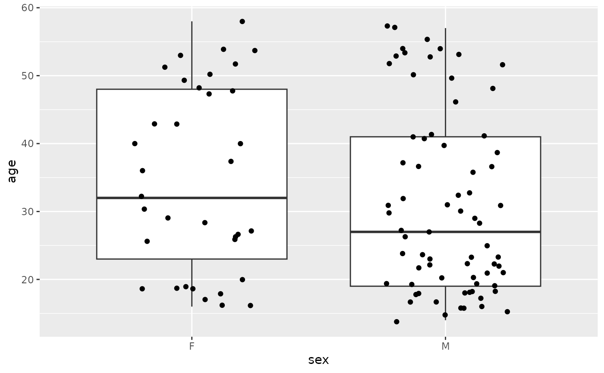

Day 2: Data Management, Statistical Analysis, and Visualization
Source:vignettes/day_2.Rmd
day_2.RmdOverview
We use two case studies today. The studies are used to illustrate the data manipulation and statistical analysis tasks that one might expect in day-to-day wet- or dry-lab work in computational oncology.
We will use functions from the dplyr package to
manage our data. dplyr is is a key
package in a particular approach to data management in R called
the ‘tidyverse’. Tidy analysis uses a standard data structure (a
tibble) and relatively small number functions to provide an
effective way to accomplish many tasks.
Start by loading the dplyr package.
Functions for ‘tidy’ data management include:
-
filter()– filter data to contain specific rows. -
select()– select a subset of columns. -
mutate()– change or add columns. ‘Vectorized’.
Example functions to summarize data:
-
count()– simple count of entries in each column. -
summarize()– e.g.,mean()orvar()iance of one or more columns. -
group_by()– summarize data by group.
tidyr and other packages complement basic functionality
-
tidyr::pivot_wider()– change a ‘long’ table to a ‘wide’ table. See example below.
We will use the readr package to read data from disk into R.
tidyr and readr are used less commonly, so we do not load them into our R session yet.
For visualization, we use ggplot2; details are provided below.
Finally, for statistical functions we use the ‘stats’ package distributed with R.
US CDC Behavioral Risk Factor Surveillance System survey data
We use data from the US Center for Disease Control’s Behavioral Risk Factor Surveillance System (BRFSS) annual survey. Check out the web page for a little more information. We are using a small subset of this data, including a random sample of 20000 observations from each of 1990 and 2010.
Data input
Use file.choose() to find the ‘BRFSS-subset.csv’ file on
the CCR file system.
brfss_file_path <- file.choose() # look for 'Rpg520/week-04/extdata/BRFSS-subset.csv'Take a peak at the data using the readLines() function
to read the first 3 lines of data, and cat("\n") to print
the result to the terminal
readLines(brfss_file_path, 3) |>
cat(sep = "\n")
#> "Age","Weight","Sex","Height","Year"
#> 31,48.9879760010809,"Female",157.48,"1990"
#> 57,81.6466266684681,"Female",157.48,"1990"The file is a ‘comma-separated value’ file. These files can be created by, for instance, using Excel’s ‘Export’ menu. The first line consists of column headers, separated by a comma. Subsequent lines represent rows of data, again with a comma separating columns.
Read the entire dataset into R with the command
readr::read_csv(). Assign the data to a variable
brfss.
brfss <- readr::read_csv(brfss_file_path)
#> Rows: 20000 Columns: 5
#> ── Column specification ────────────────────────────────────────────────────────
#> Delimiter: ","
#> chr (1): Sex
#> dbl (4): Age, Weight, Height, Year
#>
#> ℹ Use `spec()` to retrieve the full column specification for this data.
#> ℹ Specify the column types or set `show_col_types = FALSE` to quiet this message.
brfss
#> # A tibble: 20,000 × 5
#> Age Weight Sex Height Year
#> <dbl> <dbl> <chr> <dbl> <dbl>
#> 1 31 49.0 Female 157. 1990
#> 2 57 81.6 Female 157. 1990
#> 3 43 80.3 Male 178. 1990
#> 4 72 70.3 Male 170. 1990
#> 5 31 49.9 Female 155. 1990
#> 6 58 54.4 Female 155. 1990
#> 7 45 69.9 Male 173. 1990
#> 8 37 68.0 Male 180. 1990
#> 9 33 65.8 Female 170. 1990
#> 10 75 70.8 Female 152. 1990
#> # ℹ 19,990 more rowsInitial cleaning
The data are pretty simple, but two small changes will make it more
useful. Both ‘Sex’ and ‘Year’ are really factor values
(each can only take on specific levels, ‘Female’ and ‘Male’ for ‘Sex’,
and ‘1990’ and ‘2010’ for ‘Year’).
Mutate
A factor can be created from an ordinary vector x with
code like the following:
x <- c("Male", "Female", "Female", NA)
factor(x, levels = c("Female", "Male"))
#> [1] Male Female Female <NA>
#> Levels: Female Male
y <- c(2010, 1991, 1990, NA)
factor(y, levels = c("1990", "2010"))
#> [1] 2010 <NA> 1990 <NA>
#> Levels: 1990 2010Use the dplyr mutate() function to change ‘Sex’ and
‘Year’ to factors.
brfss |>
mutate(
Sex = factor(Sex, levels = c("Female", "Male")),
Year = factor(Year, levels = c("1990", "2010"))
)
#> # A tibble: 20,000 × 5
#> Age Weight Sex Height Year
#> <dbl> <dbl> <fct> <dbl> <fct>
#> 1 31 49.0 Female 157. 1990
#> 2 57 81.6 Female 157. 1990
#> 3 43 80.3 Male 178. 1990
#> 4 72 70.3 Male 170. 1990
#> 5 31 49.9 Female 155. 1990
#> 6 58 54.4 Female 155. 1990
#> 7 45 69.9 Male 173. 1990
#> 8 37 68.0 Male 180. 1990
#> 9 33 65.8 Female 170. 1990
#> 10 75 70.8 Female 152. 1990
#> # ℹ 19,990 more rowsThat looks like it’s working, save the updated data set
Data exploration
A good place to start with an analysis is basic data exploration. Perhaps the most straigth-forward thing to do is count the number of observations in each year.
Count
brfss |>
count(Year)
#> # A tibble: 2 × 2
#> Year n
#> <fct> <int>
#> 1 1990 10000
#> 2 2010 10000The data has been choosen so that each year has the same number of individuals. What about the number of females and males in each year? This is determined by responses to the survey, reflecting the relative number of males and females in the population, or at least responding to the survey.
brfss |>
count(Sex)
#> # A tibble: 2 × 2
#> Sex n
#> <fct> <int>
#> 1 Female 12039
#> 2 Male 7961What about the number of each sex in each year? Use
count() with two (or more) column names
brfss |>
count(Sex, Year)
#> # A tibble: 4 × 3
#> Sex Year n
#> <fct> <fct> <int>
#> 1 Female 1990 5718
#> 2 Female 2010 6321
#> 3 Male 1990 4282
#> 4 Male 2010 3679It seems like there are more Female respondents in 2010 than in 1990.
Use tidyr‘s
function pivot_wider() (remember to look at the help page
?pivot_wider for details on how this function works) to
pivot the ’Sex’ column entries to column names.
brfss |>
count(Sex, Year) |>
tidyr::pivot_wider(names_from = "Sex", values_from = "n")
#> # A tibble: 2 × 3
#> Year Female Male
#> <fct> <int> <int>
#> 1 1990 5718 4282
#> 2 2010 6321 3679Summarize
We used tidyr::pivot_wider() instead of just
pivot_wider(). This notation means ’use the tidyr package, and a
function in that package called pivot_wider(). This
notation to avoid conflicts if two packages have a function named
pivot_wider(); it also has additional benefits related to
managing R’s .GlobalEnv, but that is a more
advanced topic.
Use summarize() for summaries more complicated than
simple counts
brfss |>
summarize(
avg_age = mean(Age, na.rm = TRUE),
ave_wt = mean(Weight, na.rm = TRUE),
ave_ht = mean(Height, na.rm = TRUE)
)
#> # A tibble: 1 × 3
#> avg_age ave_wt ave_ht
#> <dbl> <dbl> <dbl>
#> 1 51.0 75.4 169.Nothing too exciting here, except to perhaps note the use of metric system Weight (kg) and Height (cm).
The function mean() calculates the average of the
corresponding column. na.rm = TRUE tells the function to
remove NA (missing) values before calculating the mean.
This is kind of interesting. Suppose one had a vector and calculated the
mean
No surprises. What if one of the values in x were
missing? The logic used by R is that the missing value could be
any number, so the mean could be anything – if there’s
an unknown value, then the mean must also be unknown!
Often we would like to calculate the mean after removing the unknown
values, and this is what the na.rm = TRUE argument does
mean(x, na.rm = TRUE)
#> [1] 2Group
Back to our data exploration, we might expect the average age,
weight, and height to be different between Female and Male respondents,
and perhaps also between years. Use group_by() to calculate
summaries by Sex and Year
brfss |>
group_by(Sex, Year) |>
summarize(
avg_age = mean(Age, na.rm = TRUE),
ave_wt = mean(Weight, na.rm = TRUE),
ave_ht = mean(Height, na.rm = TRUE)
)
#> `summarise()` has grouped output by 'Sex'. You can override using the `.groups`
#> argument.
#> # A tibble: 4 × 5
#> # Groups: Sex [2]
#> Sex Year avg_age ave_wt ave_ht
#> <fct> <fct> <dbl> <dbl> <dbl>
#> 1 Female 1990 46.2 64.8 163.
#> 2 Female 2010 57.1 73.0 163.
#> 3 Male 1990 43.9 81.2 178.
#> 4 Male 2010 56.2 88.8 178.This shows some interesting aspects of the data. Males are on aveage 15cm taller than females; there is no difference in average height between years.
The average age of both Female and Male respondents is greater in 2010 than in 1990. This likely reflects changing demographics, as the ‘baby boom’ cohort ages. Note that the average Female age changes by about 10.9 years, wheras the average Male age changes by about 12.3 years; perhaps this reflects different life expectancies of males and females.
Also interesting is that the average weight changes, by about 8.2 kg (18 lbs) for Female respondenents, 7.6 kg (16.7 lbs) for Males. This could be because people in general have become heavier, or that older people are heavier than younger people (or for other reasons not captured in the data).
Visual exploration
We will use the ggplot2 package to visually explore our data. We use several functions from this package, so load it into our R session.
ggplot2 constructs plots by adding layers. Layers have different roles. The plot starts with the specification of the data set to be plotted…
Aesthetics & geometries: box plot
ggplot(brfss_2010)…and then adds the ‘aesthetics’ (columns to be used for X and Y axes, how to color points, etc)
…and finally one or more ‘geometries’ (‘geom’) that describe the
geometric relationship between the x and y aesthetics. One geom is
geom_boxplot(), which draws a box-and-whiskers plot.
ggplot(brfss_2010) +
aes(x = Sex, y = Weight) +
geom_boxplot()
#> Warning: Removed 395 rows containing non-finite values
#> (`stat_boxplot()`).
The bar in the figure is the median weigth, the box represents upper and lower quartiles of the data, the whiskers extend to 1.5 times the interquartile range. Points outside the whiskers represent potential outliers. The figure shows the difference in Female and Male weights, as well as a skew in the weight distribution of both Female and Male respondents.
Scatter plots
Presumably taller people are heavier than shorter people. Replace
‘Sex’ with ‘Height’ in aes(), and replace
geom_boxplot() with geom_point() to generate a
scatterplot showing this relationship
ggplot(brfss_2010) +
aes(x = Height, y = Weight) +
geom_point()
#> Warning: Removed 450 rows containing missing values (`geom_point()`).Yes there looks like a relationship. Add
geom_smooth(method = "lm") to fit a smoothed relationship
to the points; method = "lm" indicates that the smoothed
line should be a linear regression.
ggplot(brfss_2010) +
aes(x = Height, y = Weight) +
geom_point() +
geom_smooth(method = "lm")
#> `geom_smooth()` using formula = 'y ~ x'
#> Warning: Removed 450 rows containing non-finite values
#> (`stat_smooth()`).
#> Warning: Removed 450 rows containing missing values (`geom_point()`).
The relationship between height and weight likely depends on sex. Add
color = Sex to the aes() argument, so each
geom (both points and smoothed line) is colored by Sex.
ggplot(brfss_2010) +
aes(x = Height, y = Weight, color = Sex) +
geom_point() +
geom_smooth(method = "lm")
#> `geom_smooth()` using formula = 'y ~ x'
#> Warning: Removed 450 rows containing non-finite values
#> (`stat_smooth()`).
#> Warning: Removed 450 rows containing missing values (`geom_point()`).
The lines cover the range of values for each sex; the relationship between height and weight appears slightly steeper for males than females.
Has the relationship between height and weight of males changed
between 1990 and 2010? Change the dataset to brfss_male,
color by Year, and add a title to the plot so that we know
a little bit more about the relationship. Also, explore a data
transformation by using the square root (function sqrt())
of weight
ggplot(brfss_male) +
aes(x = Height, y = sqrt(Weight), color = Year) +
geom_point() +
geom_smooth(method = "lm") +
labs(title = "BRFSS Male Subset")
#> `geom_smooth()` using formula = 'y ~ x'
#> Warning: Removed 104 rows containing non-finite values
#> (`stat_smooth()`).
#> Warning: Removed 104 rows containing missing values (`geom_point()`).
The figure suggests that 2010 males are heavier than 1990 males at all heights, and hints that the relationship between weight and height is steeper in 2010; a formal statistical analysis is required for further confidence.
Statistical analysis
This section illustrates basic statistical tests; it would be interesting to sit down with a statistician to discuss the subtleties of a more correct analysis.
Difference between groups
Here is a partial summary of the brfss_2010 data
subset
brfss_2010 |>
group_by(Sex) |>
summarize(
n = n(),
ave_age = mean(Age, na.rm = TRUE),
ave_wt = mean(Weight, na.rm = TRUE),
ave_ht = mean(Height, na.rm = TRUE)
)
#> # A tibble: 2 × 5
#> Sex n ave_age ave_wt ave_ht
#> <fct> <int> <dbl> <dbl> <dbl>
#> 1 Female 6321 57.1 73.0 163.
#> 2 Male 3679 56.2 88.8 178.Is there statistical support for the small difference between average ages of Female and Male respondents?
Use t.test() to compare two groups. After studying the
help page ?t.test, we use the ‘formula’ notation to test
for differences in Age as a function of Sex, Age ~ Sex,
using the subset brfss_2010 as the data source.
t.test(Age ~ Sex, brfss_2010)
#>
#> Welch Two Sample t-test
#>
#> data: Age by Sex
#> t = 2.4497, df = 7768.7, p-value = 0.01432
#> alternative hypothesis: true difference in means between group Female and group Male is not equal to 0
#> 95 percent confidence interval:
#> 0.1674909 1.5091167
#> sample estimates:
#> mean in group Female mean in group Male
#> 57.08824 56.24993The summary reports (at the bottom) mean ages of Male and Female respondents consistent with our own calculations, so we know we have not made some kind of serious blunder in formulating the test. The t-statistic of 2.4497162, with P-value 0.0143188 is significant.
What about differences in Male Weight between 1990 and 2010?
t.test(Weight ~ Year, brfss_male)
#>
#> Welch Two Sample t-test
#>
#> data: Weight by Year
#> t = -20.751, df = 6549.4, p-value < 2.2e-16
#> alternative hypothesis: true difference in means between group 1990 and group 2010 is not equal to 0
#> 95 percent confidence interval:
#> -8.390845 -6.942327
#> sample estimates:
#> mean in group 1990 mean in group 2010
#> 81.17999 88.84657Conversation with a statistician might make us concerned about
whether assumptions of the t-test are fully satisfied, e.g.,
the data are supposed to be normally distributed, but as we saw in the
box plots weights are skewed. We could try to transform the data (formal
approaches to assess appropriateness of data transformations are
available), e.g., by using the square root (sqrt() of
Weight
t.test(sqrt(Weight) ~ Year, brfss_male)
#>
#> Welch Two Sample t-test
#>
#> data: sqrt(Weight) by Year
#> t = -20.581, df = 6781.3, p-value < 2.2e-16
#> alternative hypothesis: true difference in means between group 1990 and group 2010 is not equal to 0
#> 95 percent confidence interval:
#> -0.4359662 -0.3601384
#> sample estimates:
#> mean in group 1990 mean in group 2010
#> 8.980087 9.378139Or we might use a statistic like the Wilcoxon test that make fewer assumptions about the underlying statistical distribution.
wilcox.test(Weight ~ Year, brfss_male)
#>
#> Wilcoxon rank sum test with continuity correction
#>
#> data: Weight by Year
#> W = 5754766, p-value < 2.2e-16
#> alternative hypothesis: true location shift is not equal to 0Regardless of the details of the analysis, the difference in Male Weight between 1990 and 2010 is highly signficant.
Linear regression
The ‘BRFSS Male Subset’ figure above shows linear relations between the square root of Weight and Height. How would we calculate this regression, and assess its significance?
The answer is to fit a linear regression to the data. In R,
this is done by fitting a linear model (lm()) and then
summarizing the result. We focus on Male 2010 data.
brfss_male_2010 <-
brfss_male |>
filter(Year == "2010")
## fit the linear model
fit <- lm(sqrt(Weight) ~ Height, brfss_male_2010)
## summarize the fit, including a statistical assessment of the fit
summary(fit)
#>
#> Call:
#> lm(formula = sqrt(Weight) ~ Height, data = brfss_male_2010)
#>
#> Residuals:
#> Min 1Q Median 3Q Max
#> -3.0500 -0.5976 -0.1014 0.4625 6.8011
#>
#> Coefficients:
#> Estimate Std. Error t value Pr(>|t|)
#> (Intercept) 0.083901 0.341398 0.246 0.806
#> Height 0.052219 0.001916 27.253 <2e-16 ***
#> ---
#> Signif. codes: 0 '***' 0.001 '**' 0.01 '*' 0.05 '.' 0.1 ' ' 1
#>
#> Residual standard error: 0.8629 on 3617 degrees of freedom
#> (60 observations deleted due to missingness)
#> Multiple R-squared: 0.1704, Adjusted R-squared: 0.1701
#> F-statistic: 742.7 on 1 and 3617 DF, p-value: < 2.2e-16The ANOVA table shows that the relationship is highly significant. The ‘Adjusted R-squared’ value indicates that about 17% of the variation in Weight is accounted for by Height. The estimated coefficient associated with Height is the slope of the line, indicating that the square root of Weight increases by about 0.0522187 for every increase in Height of 1 cm.
As an aside, one might hope that plot(fit) would plot
the regression line. Actually, it creates a series of diagnostic plots
that help us assess the appropriateness of our choice of a linear model
for describing this data.
More advanced analysis using R to test, e.g., for differences in the intercept or slope of the regression in 1990 versus 2010 are straight-forward to implement, but require more sophisticated statistical understanding.
Acute Lymphocytic Leukemia
This data set is from an old microarray experiment investigating acute lymphocytic leukemia (ALL) (PMID 14684422, 16243790; the data has been extracted from the ALL Bioconductor package). We focus on phenotypes of 128 patients.
1 cod Patient ID 2 diagnosis Date of diagnosis 3 sex Gender of the patient 4 age Age of the patient at entry 5 BT does the patient have B-cell or T-cell ALL 6 remission Complete remission(CR), refractory(REF) or NA. Derived from CR 7 CR Original remisson data 8 date.cr Date complete remission if achieved 9 t(4;11) did the patient have t(4;11) translocation. Derived from citog 10 t(9;22) did the patient have t(9;22) translocation. Derived from citog 11 cyto.normal Was cytogenetic test normal? Derived from citog 12 citog original citogenetics data, deletions or t(4;11), t(9;22) sta… 13 mol.biol molecular biology 14 fusion protein which of p190, p210 or p190/210 for bcr/able 15 mdr multi-drug resistant 16 kinet ploidy: either diploid or hyperd. 17 ccr Continuous complete remission? Derived from f.u 18 relapse Relapse? Derived from f.u 19 transplant did the patient receive a bone marrow transplant? Derived fro… 20 f.u follow up data available 21 date last seen date patient was last seen
Data input
What is a ‘csv’ file?
all_file <- file.choose()
all <- read_csv(all_file)
glimpse(all)
#> Rows: 128
#> Columns: 21
#> $ cod <chr> "1005", "1010", "3002", "4006", "4007", "4008", "4010…
#> $ diagnosis <chr> "5/21/1997", "3/29/2000", "6/24/1998", "7/17/1997", "…
#> $ sex <chr> "M", "M", "F", "M", "M", "M", "F", "M", "M", "M", "M"…
#> $ age <dbl> 53, 19, 52, 38, 57, 17, 18, 16, 15, 40, 33, 55, 5, 18…
#> $ BT <chr> "B2", "B2", "B4", "B1", "B2", "B1", "B1", "B1", "B2",…
#> $ remission <chr> "CR", "CR", "CR", "CR", "CR", "CR", "CR", "CR", "CR",…
#> $ CR <chr> "CR", "CR", "CR", "CR", "CR", "CR", "CR", "CR", "CR",…
#> $ date.cr <chr> "8/6/1997", "6/27/2000", "8/17/1998", "9/8/1997", "9/…
#> $ `t(4;11)` <lgl> FALSE, FALSE, NA, TRUE, FALSE, FALSE, FALSE, FALSE, F…
#> $ `t(9;22)` <lgl> TRUE, FALSE, NA, FALSE, FALSE, FALSE, FALSE, FALSE, F…
#> $ cyto.normal <lgl> FALSE, FALSE, NA, FALSE, FALSE, FALSE, FALSE, FALSE, …
#> $ citog <chr> "t(9;22)", "simple alt.", NA, "t(4;11)", "del(6q)", "…
#> $ mol.biol <chr> "BCR/ABL", "NEG", "BCR/ABL", "ALL1/AF4", "NEG", "NEG"…
#> $ `fusion protein` <chr> "p210", NA, "p190", NA, NA, NA, NA, NA, NA, "p190", "…
#> $ mdr <chr> "NEG", "POS", "NEG", "NEG", "NEG", "NEG", "POS", "NEG…
#> $ kinet <chr> "dyploid", "dyploid", "dyploid", "dyploid", "dyploid"…
#> $ ccr <lgl> FALSE, FALSE, FALSE, FALSE, FALSE, FALSE, FALSE, FALS…
#> $ relapse <lgl> FALSE, TRUE, TRUE, TRUE, TRUE, TRUE, TRUE, TRUE, TRUE…
#> $ transplant <lgl> TRUE, FALSE, FALSE, FALSE, FALSE, FALSE, FALSE, FALSE…
#> $ f.u <chr> "BMT / DEATH IN CR", "REL", "REL", "REL", "REL", "REL…
#> $ `date last seen` <chr> NA, "8/28/2000", "10/15/1999", "1/23/1998", "11/4/199…Examples
count(all, sex)
#> # A tibble: 3 × 2
#> sex n
#> <chr> <int>
#> 1 F 42
#> 2 M 83
#> 3 NA 3Data management often involves several steps. Chain the steps
together using a pipe, |>. The result of the left-hand
side of the pipe becomes the first argument of the function on the
right-hand side.
all |>
count(sex)
#> # A tibble: 3 × 2
#> sex n
#> <chr> <int>
#> 1 F 42
#> 2 M 83
#> 3 NA 3‘Tidy’ functions can usually be piped together. Use
filter() to keep only rows that are not NA,
then count mol.biol on this subset of the data.
all |>
filter(!is.na(sex)) |>
count(mol.biol)
#> # A tibble: 6 × 2
#> mol.biol n
#> <chr> <int>
#> 1 ALL1/AF4 10
#> 2 BCR/ABL 37
#> 3 E2A/PBX1 4
#> 4 NEG 72
#> 5 NUP-98 1
#> 6 p15/p16 1Many ‘tidy’ functions can take more than one argument, e.g., to
filter and count on sex and mol.biol…
all |>
filter(
!is.na(sex),
mol.biol %in% c("BCR/ABL", "NEG")
) |>
count(sex, mol.biol)
#> # A tibble: 4 × 3
#> sex mol.biol n
#> <chr> <chr> <int>
#> 1 F BCR/ABL 16
#> 2 F NEG 19
#> 3 M BCR/ABL 21
#> 4 M NEG 53The following illustrates pivot_wider, taking names for
new columns from the mol.biol column, and values from the
n (count) column. This pivoted table is often useful for
displaying results, but not so useful for subsequent computation.
all |>
filter(
!is.na(sex),
mol.biol %in% c("BCR/ABL", "NEG")
) |>
count(sex, mol.biol) |>
tidyr::pivot_wider(names_from = "mol.biol", values_from = "n")
#> # A tibble: 2 × 3
#> sex `BCR/ABL` NEG
#> <chr> <int> <int>
#> 1 F 16 19
#> 2 M 21 53Use mutate() to update or add a column, e.g., the
BT column classifies each sample as B-cell or T-cell
ALL
all |>
count(BT)
#> # A tibble: 10 × 2
#> BT n
#> <chr> <int>
#> 1 B 5
#> 2 B1 19
#> 3 B2 36
#> 4 B3 23
#> 5 B4 12
#> 6 T 5
#> 7 T1 1
#> 8 T2 15
#> 9 T3 10
#> 10 T4 2Perhaps we are interested in a less-complete characterization, e.g., is the sample B-cell, or T-cell, pooling over subtypes B1, B2, etc. We’ll use two new functions from ‘base’ R
-
startsWith()takes a vector as the first input argument, and a prefix string as the second argument.startsWith()returnsTRUEfor each value of the vector that matches the prefix, andFALSEotherwise.x <- c("B", "B1", "T") y <- startsWith(x, "B") y #> [1] TRUE TRUE FALSE -
ifelse()takes a logical vector as it’s first argument, a value to return ifan elemment of the logical vector isTRUEfor the second argument, and similarly for the thrid argument.ifelse(y, "B", "T") #> [1] "B" "B" "T"In one line, this is
ifelse(startsWith(x, "B"), "B", "T") #> [1] "B" "B" "T"
Use these with the tidy function mutate() to create a
new column BorT
all |>
mutate(BorT = ifelse(startsWith(BT, "B"), "B", "T")) |>
count(BT, BorT)
#> # A tibble: 10 × 3
#> BT BorT n
#> <chr> <chr> <int>
#> 1 B B 5
#> 2 B1 B 19
#> 3 B2 B 36
#> 4 B3 B 23
#> 5 B4 B 12
#> 6 T T 5
#> 7 T1 T 1
#> 8 T2 T 15
#> 9 T3 T 10
#> 10 T4 T 2New tibbles can be created by manipulating existing tibbles, e.g.,
creating an all_subset tibble containing only samples whose
sex is known, and who are BCR/ABL or NEG; it also contains only some of
the columns.
all_subset <-
## start with the 'all' tibble...
all |>
## filter to rows whose 'sex' and 'age' is known, and with 'mol.biol' as
## BCR/ABL or NEG
filter(
!is.na(sex),
!is.na(age),
mol.biol %in% c("BCR/ABL", "NEG")
) |>
## add a column 'BorT' that simplifies B- or T-cell classification
mutate(
BorT = ifelse(startsWith(BT, "B"), "B", "T")
) |>
## select a subset of columns for future analysis
select(
cod, sex, age, BorT, mol.biol
)
all_subset
#> # A tibble: 107 × 5
#> cod sex age BorT mol.biol
#> <chr> <chr> <dbl> <chr> <chr>
#> 1 1005 M 53 B BCR/ABL
#> 2 1010 M 19 B NEG
#> 3 3002 F 52 B BCR/ABL
#> 4 4007 M 57 B NEG
#> 5 4008 M 17 B NEG
#> 6 4010 F 18 B NEG
#> 7 4016 M 16 B NEG
#> 8 6002 M 15 B NEG
#> 9 8001 M 40 B BCR/ABL
#> 10 8011 M 33 B BCR/ABL
#> # ℹ 97 more rowsStatistical analysis
Descriptive statistics (count, mean, variance, etc.) can be
calculated using summarize().
all_subset |>
summarize(n = n(), ave_age = mean(age))
#> # A tibble: 1 × 2
#> n ave_age
#> <int> <dbl>
#> 1 107 32.2Summarizing by groups is often important and easily accomplished
using group_by().
all_subset |>
group_by(sex) |>
summarize(n = n(), ave_age = mean(age))
#> # A tibble: 2 × 3
#> sex n ave_age
#> <chr> <int> <dbl>
#> 1 F 35 34.8
#> 2 M 72 30.9Classical statistics (base R)
t-test
t.test(age ~ sex, all_subset)
#>
#> Welch Two Sample t-test
#>
#> data: age by sex
#> t = 1.3901, df = 66.316, p-value = 0.1691
#> alternative hypothesis: true difference in means between group F and group M is not equal to 0
#> 95 percent confidence interval:
#> -1.687236 9.424537
#> sample estimates:
#> mean in group F mean in group M
#> 34.77143 30.90278Chi-squared test
all_subset |>
count(BorT, sex) |>
tidyr::pivot_wider(names_from = "BorT", values_from = "n")
#> # A tibble: 2 × 3
#> sex B T
#> <chr> <int> <int>
#> 1 F 28 7
#> 2 M 48 24
with(all_subset, chisq.test(sex, BorT))
#>
#> Pearson's Chi-squared test with Yates' continuity correction
#>
#> data: sex and BorT
#> X-squared = 1.4383, df = 1, p-value = 0.2304linear regression
Visualization
Box plot
ggplot(all_subset) +
aes(x = sex, y = age) +
geom_boxplot() +
geom_jitter(width = .25)
Scatter plot
Linear regression
Session information
For reproducibility, I record the software versions used to create this document
sessionInfo()
#> R version 4.3.2 (2023-10-31)
#> Platform: x86_64-pc-linux-gnu (64-bit)
#> Running under: Ubuntu 22.04.3 LTS
#>
#> Matrix products: default
#> BLAS: /usr/lib/x86_64-linux-gnu/openblas-pthread/libblas.so.3
#> LAPACK: /usr/lib/x86_64-linux-gnu/openblas-pthread/libopenblasp-r0.3.20.so; LAPACK version 3.10.0
#>
#> locale:
#> [1] LC_CTYPE=C.UTF-8 LC_NUMERIC=C LC_TIME=C.UTF-8
#> [4] LC_COLLATE=C.UTF-8 LC_MONETARY=C.UTF-8 LC_MESSAGES=C.UTF-8
#> [7] LC_PAPER=C.UTF-8 LC_NAME=C LC_ADDRESS=C
#> [10] LC_TELEPHONE=C LC_MEASUREMENT=C.UTF-8 LC_IDENTIFICATION=C
#>
#> time zone: UTC
#> tzcode source: system (glibc)
#>
#> attached base packages:
#> [1] stats graphics grDevices utils datasets methods base
#>
#> other attached packages:
#> [1] readr_2.1.5 ggplot2_3.4.4 dplyr_1.1.4 RPG520_0.0.0.9001
#>
#> loaded via a namespace (and not attached):
#> [1] sass_0.4.8 utf8_1.2.4 generics_0.1.3 tidyr_1.3.1
#> [5] lattice_0.21-9 stringi_1.8.3 hms_1.1.3 digest_0.6.34
#> [9] magrittr_2.0.3 evaluate_0.23 grid_4.3.2 fastmap_1.1.1
#> [13] Matrix_1.6-1.1 jsonlite_1.8.8 mgcv_1.9-0 purrr_1.0.2
#> [17] fansi_1.0.6 scales_1.3.0 textshaping_0.3.7 jquerylib_0.1.4
#> [21] cli_3.6.2 rlang_1.1.3 crayon_1.5.2 splines_4.3.2
#> [25] munsell_0.5.0 bit64_4.0.5 withr_3.0.0 cachem_1.0.8
#> [29] yaml_2.3.8 tools_4.3.2 parallel_4.3.2 tzdb_0.4.0
#> [33] memoise_2.0.1 colorspace_2.1-0 vctrs_0.6.5 R6_2.5.1
#> [37] lifecycle_1.0.4 stringr_1.5.1 fs_1.6.3 bit_4.0.5
#> [41] vroom_1.6.5 ragg_1.2.7 pkgconfig_2.0.3 desc_1.4.3
#> [45] pkgdown_2.0.7 pillar_1.9.0 bslib_0.6.1 gtable_0.3.4
#> [49] glue_1.7.0 systemfonts_1.0.5 highr_0.10 xfun_0.41
#> [53] tibble_3.2.1 tidyselect_1.2.0 knitr_1.45 farver_2.1.1
#> [57] nlme_3.1-163 htmltools_0.5.7 labeling_0.4.3 rmarkdown_2.25
#> [61] compiler_4.3.2